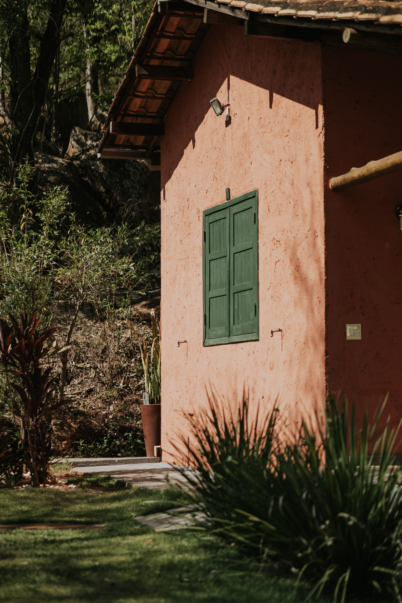

En este artículo
Introducción
El recibidor es el primer contacto con la casa y también una zona de uso intenso. Combinar almacenamiento, iluminación, proporción y detalles personales permite crear una entrada atractiva sin perder funcionalidad.
Antes de realizar cambios conviene observar el espacio, medir y definir qué problema quieres resolver. Trabajar con una intención clara evita compras impulsivas y ayuda a que cada decisión aporte comodidad, orden o identidad.
Construye una base práctica y ordenada
El recibidor debe facilitar la llegada y salida. Observa qué objetos aparecen todos los días: llaves, cartera, bolsos, zapatos, correspondencia o paraguas. Si no tienen un lugar definido, terminarán sobre cualquier superficie. Diseña primero esas pequeñas rutinas.
Mide el espacio con la puerta completamente abierta. Una consola bonita no sirve si impide el giro de la hoja o estrecha demasiado el paso. En pasillos angostos, una balda poco profunda puede sustituir un mueble convencional.
Define una superficie de apoyo, aunque sea pequeña. Una bandeja para llaves y una cesta para objetos de bolsillo evitan que la entrada acumule desorden. Si no hay espacio horizontal, utiliza soluciones de pared.
La iluminación debe ser suficiente para entrar con seguridad y encontrar objetos. Una lámpara de techo puede complementarse con un aplique o lámpara de sobremesa cuando existe consola. Los sensores pueden ser útiles en hogares donde se llega con las manos ocupadas.
La base debe ser sencilla y resistente. El recibidor recibe polvo, humedad del exterior y golpes frecuentes, por lo que materiales fáciles de limpiar suelen funcionar mejor que acabados muy delicados.
Para tomar decisiones con más seguridad, conviene trabajar por etapas y evaluar el resultado antes de seguir. Una modificación sencilla puede resolver más de lo esperado. Cuando se cambia distribución, color o iluminación, espera unos días y observa el espacio en diferentes momentos. La luz natural, el uso cotidiano y la circulación revelan aspectos que no aparecen en una fotografía de inspiración.
El presupuesto también debe formar parte del diseño. Define primero las necesidades y después asigna dinero a las piezas que realmente afectan al confort. Comprar varios accesorios económicos sin planificación puede costar lo mismo que una sola solución de mayor utilidad. Reutilizar, mover y editar lo existente es parte de una decoración inteligente.
Aprovecha la pared como punto focal
La pared principal del recibidor ofrece una oportunidad para crear identidad sin ocupar suelo. Un espejo puede reflejar luz y servir para una última revisión antes de salir. Colócalo a una altura cómoda y evita que refleje directamente una zona desordenada.
El arte también funciona bien. Una obra grande, una fotografía o una composición pequeña pueden establecer el tono de la casa. La escala debe relacionarse con la consola o la pared. Una pieza muy pequeña en una superficie amplia puede perder presencia.

Si el espacio es estrecho, el color puede aportar carácter sin añadir volumen. Pintar la pared del fondo o utilizar un papel resistente crea un punto focal. No es obligatorio recurrir a tonos claros: un color intenso puede funcionar si la iluminación lo acompaña.
Ganchos y percheros pueden integrarse visualmente. Elige acabados relacionados con tiradores, lámparas u otros elementos para que parezcan parte del diseño y no un añadido improvisado.
No llenes la pared de funciones. Si ya existe un espejo grande y varios ganchos, añadir estantes, cuadros y decoración puede saturar. Selecciona qué elemento será protagonista.
El mantenimiento futuro debe influir en cada elección. Los materiales muy delicados, los textiles difíciles de lavar o los objetos que requieren cuidados constantes pueden resultar atractivos al principio y convertirse después en una carga. Pregúntate cuánto tiempo estás dispuesto a dedicar a limpieza y conservación.
La seguridad merece la misma atención. Muebles altos deben fijarse cuando corresponda, alfombras necesitan estabilidad, instalaciones eléctricas deben ser apropiadas y los objetos pesados no deberían quedar en posiciones de riesgo. Un espacio bonito tiene que seguir siendo cómodo y seguro para quienes lo usan.
Añade almacenamiento y utilidad
El almacenamiento del recibidor debe responder a la frecuencia de uso. Los zapatos cotidianos necesitan acceso rápido; los de temporada pueden guardarse en otro lugar. Un banco con espacio inferior permite sentarse y mantener calzado organizado, siempre que no estreche demasiado el paso.
Para abrigos, bolsos y paraguas, considera el clima y número de personas. Un perchero con demasiadas prendas se ve desordenado y puede volverse inestable. Mantén en la entrada solo lo necesario para la temporada.
La correspondencia necesita un sistema. Una bandeja de entrada funciona si se vacía regularmente. Si se convierte en archivo permanente, perderá su función. Establece una revisión semanal.
Los objetos pequeños pueden guardarse dentro de cajones o cajas etiquetadas. Cargadores, bolsas reutilizables o correas de mascotas pueden permanecer cerca de la puerta sin quedar visibles.
Si el recibidor comunica directamente con el salón, intenta que el almacenamiento cerrado o visualmente ordenado predomine. La entrada se percibirá como parte del espacio de estar y no como una zona de acumulación.

La decoración funciona mejor cuando existe una jerarquía visual. Elige uno o dos puntos de interés y permite que el resto acompañe. Si cada pared, mueble y accesorio intenta llamar la atención al mismo tiempo, la habitación se percibe más pequeña y menos serena.
Repetir materiales o colores crea continuidad. No significa comprar conjuntos idénticos, sino establecer relaciones: un tono de un cuadro puede aparecer en un cojín; una madera puede repetirse en un marco; un acabado metálico puede conectar lámpara y tiradores. Estas pequeñas repeticiones hacen que el espacio se sienta pensado.
Introduce personalidad con pocos detalles
Una vez resuelta la función, incorpora detalles personales. Una pieza artesanal, un jarrón, una fotografía o una planta apropiada para la luz disponible pueden definir el carácter. No necesitas una colección completa de accesorios.
Los aromas pueden contribuir a la bienvenida, pero deben ser suaves y no sustituir ventilación y limpieza. Si utilizas velas, difusores u otros productos, sigue sus indicaciones de seguridad y considera sensibilidades de las personas que viven o visitan la casa.
Una alfombra o felpudo interior puede añadir color y proteger el suelo. Debe ser antideslizante, permitir abrir la puerta y soportar tránsito. En zonas lluviosas, el material debe secarse con facilidad.
La iluminación decorativa también aporta personalidad. Una lámpara con diseño interesante puede convertirse en el punto especial del recibidor. Si la entrada es pequeña, una sola pieza protagonista suele ser más efectiva que muchos adornos.
Cambia algunos detalles según la temporada sin rehacer toda la decoración. Flores, ramas, una bandeja o una lámina pueden rotarse y mantener la entrada fresca sin generar compras constantes.
Por último, deja margen para que el espacio evolucione. Las necesidades cambian y la decoración no debería impedir adaptaciones. Evita llenar todos los huecos desde el primer día. Una casa personal se construye con el tiempo, incorporando piezas que tienen sentido y retirando aquellas que dejan de cumplir una función.
Revisar el espacio cada pocos meses ayuda a controlar acumulación y mantener coherencia. Si algo nunca se usa, siempre estorba o exige demasiado mantenimiento, quizá no merece el lugar que ocupa.
Consejos adicionales para mantener el resultado
Fotografía el recibidor desde la puerta de entrada. Esa vista revela inmediatamente si existe demasiado mobiliario o si los objetos pequeños dominan la escena. Después retira todo lo que no tenga una función clara y vuelve a incorporar únicamente lo necesario.

Considera también el mantenimiento. Un recibidor funcional debería poder ordenarse en pocos minutos. Si cada limpieza exige mover muchos objetos decorativos, probablemente hay demasiados. Dejar una parte de la consola libre facilita depositar temporalmente una bolsa o paquete al llegar.
Finalmente, conecta el recibidor con el resto de la casa repitiendo uno o dos elementos: un color, una madera, un acabado metálico o un estilo de marco. Esa continuidad hace que la entrada tenga personalidad sin parecer una habitación desconectada.
Plan práctico para aplicar los cambios sin equivocarse
Empieza con una lista de tres prioridades y ordénalas por impacto. Por ejemplo: mejorar circulación, resolver almacenamiento y después trabajar la estética. Esta secuencia evita dedicar presupuesto a accesorios cuando todavía existe un problema funcional sin resolver.
Realiza una prueba temporal siempre que sea posible. Mueve muebles, coloca cinta para representar una alfombra o cuelga plantillas de papel antes de perforar. Vivir con esa propuesta durante unos días permite detectar molestias reales antes de gastar dinero o realizar cambios difíciles de revertir.
Haz una fotografía desde los principales puntos de vista. La cámara simplifica la escena y ayuda a detectar proporciones, acumulación y zonas vacías. Después compara con el objetivo inicial y decide si todavía falta algo o si el espacio ya funciona.
Por último, establece un límite de compras. Cada elemento nuevo debería resolver una necesidad, sustituir algo o aportar un valor visual claro. Si no puedes explicar qué función cumple, espera unos días antes de adquirirlo. Esta regla sencilla protege presupuesto y evita que el espacio vuelva a saturarse.
Una rutina sencilla para que el recibidor siga funcionando
Al final del día, dedica unos minutos a devolver cada objeto a su lugar. Vacía la bandeja de papeles, coloca zapatos donde corresponden y cuelga únicamente los abrigos de uso frecuente. Esta rutina evita que la entrada acumule cosas con rapidez.
Una vez por semana, limpia felpudo, consola y espejo y revisa la correspondencia. Una vez por temporada, cambia prendas y accesorios para que el almacenamiento disponible siga siendo suficiente. Mantener la entrada ligera requiere menos esfuerzo que ordenar una gran acumulación cada varios meses.
Si el recibidor empieza a verse saturado, retira primero objetos decorativos antes de añadir más almacenamiento. Muchas veces el problema no es falta de muebles, sino exceso de elementos que han ido llegando sin una función clara.
Preguntas frecuentes
¿Cuál es la mejor manera de empezar a decorar un recibidor?
Empieza resolviendo lo práctico: dónde dejar llaves, zapatos o bolsos. Después trabaja iluminación, pared y decoración según el espacio disponible.
¿Qué hacer si el recibidor es muy pequeño?
Utiliza muebles estrechos, ganchos, baldas y soluciones verticales. Mantén el suelo despejado y evita objetos que dificulten abrir la puerta.
¿Qué errores deberían evitarse?
Evita muebles demasiado profundos, superficies llenas de objetos, iluminación insuficiente y almacenamiento sin relación con los hábitos reales de la casa.
Conclusión
Renovar o decorar un espacio no depende de llenarlo de objetos nuevos. En cómo decorar el recibidor con personalidad y mantenerlo funcional, las mejores decisiones son aquellas que mejoran el uso cotidiano, respetan las proporciones y pueden mantenerse con facilidad. Medir, observar, reutilizar y avanzar por etapas permite conseguir un resultado personal y duradero sin perder funcionalidad.